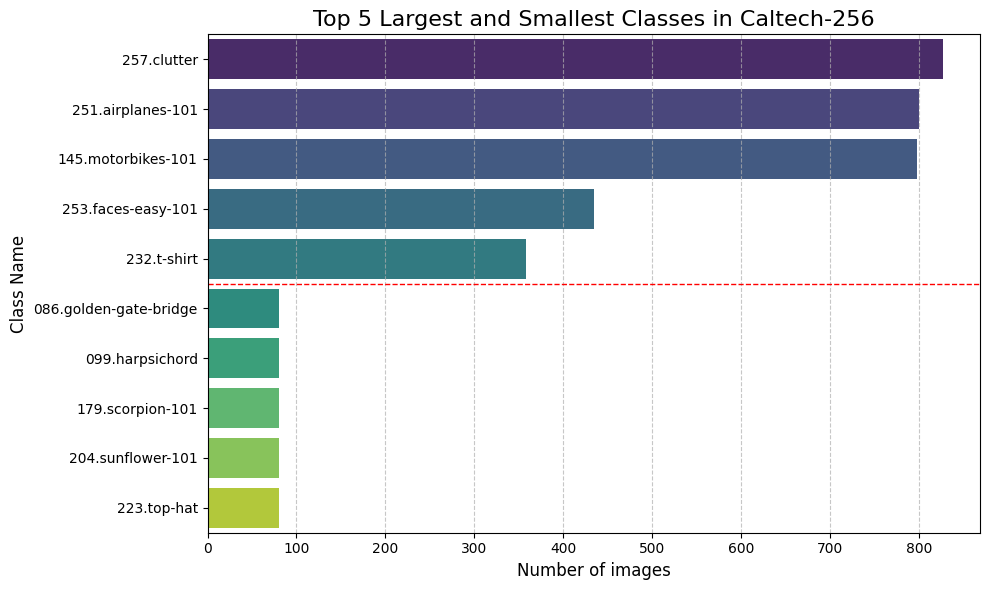
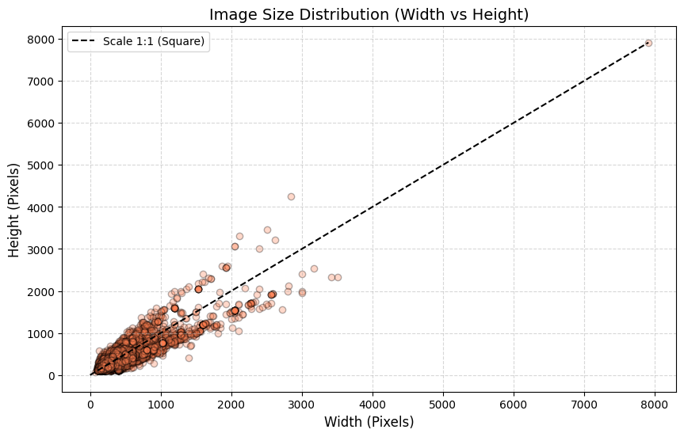
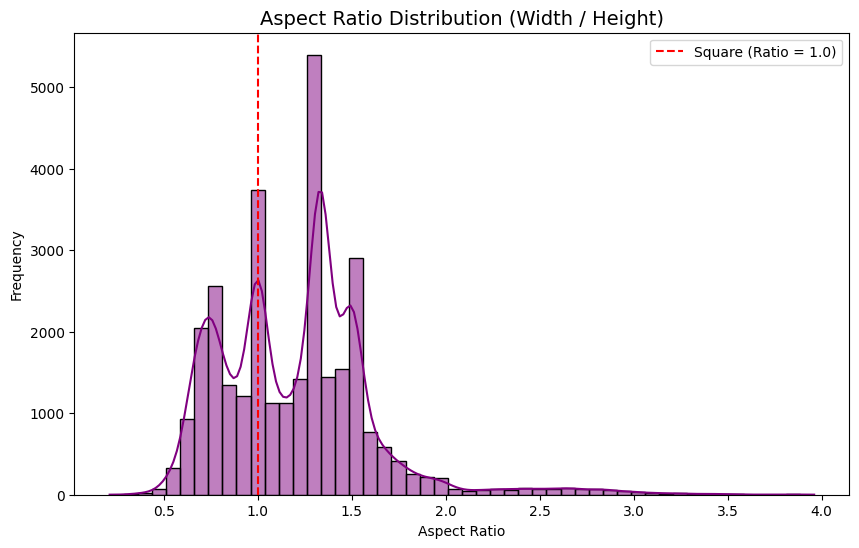
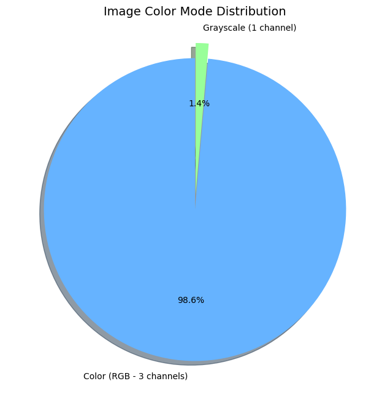
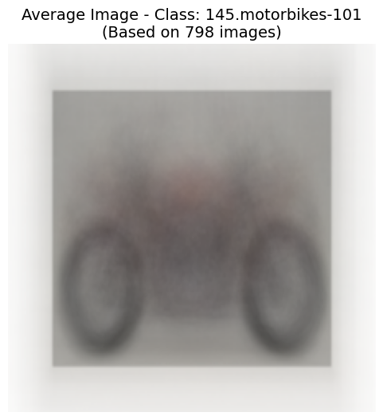
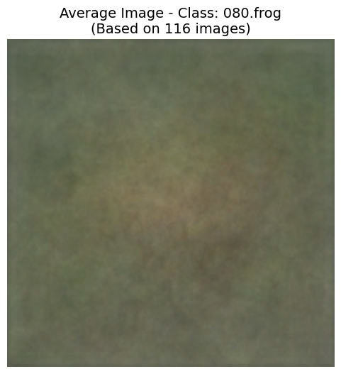

2. Comprehensive Data Analysis
An in-depth analysis of the Caltech-256 dataset reveals significant challenges related to class imbalance, dimensional variance, and intra-class diversity. Understanding these characteristics is crucial for designing a robust training pipeline.
Class Distribution (Imbalance)

- Observation: The dataset exhibits severe class imbalance. The largest class (`257.clutter`) has over 800 images, while the smallest classes (e.g., `top-hat`, `sunflower`) have fewer than 100 images.
- Implication: This long-tail distribution necessitates strategies like class weighting, oversampling, or specific loss functions (e.g., Focal Loss) to prevent the model from ignoring minority classes.
Dimensional Variance

- Observation: Image dimensions vary drastically, with widths and heights ranging from under 100 pixels to nearly 8000 pixels.
- Implication: Standardizing the input size (e.g., resizing to 224x224) is mandatory, but aggressive resizing might distort features or cause information loss, highlighting the need for careful augmentation strategies (e.g., RandomResizedCrop).
Aspect Ratio & Color Mode


- Observation: Most images are landscape or portrait, avoiding perfect squares (Ratio = 1.0). While 98.6% of images are RGB, 1.4% are Grayscale.
- Implication: Grayscale images must be converted to 3 channels before being fed into standard architectures like ResNet or ViT to ensure tensor compatibility.
Intra-class Diversity (Average Images)


- Observation: The "Motorbikes" average image retains a distinct shape, indicating consistent object placement. However, the "Frog" average image is a blurry, amorphous blob, suggesting high variance in pose, background, and scale.
- Implication: This proves the dataset's high difficulty. Models must learn complex spatial hierarchies rather than relying on simple shape templates, making advanced architectures like Vision Transformers highly relevant.